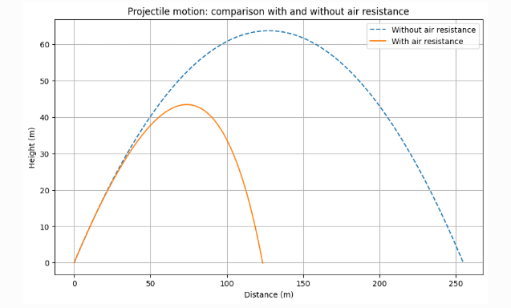

Problem 1
Exploring the Relationship Between Angle and Projectile Range
1. Introduction
Projectile motion may appear simple at first glance, but it forms a critical foundation for exploring essential physics concepts. In this problem, we aim to examine how the range of a projectile is influenced by the angle at which it is launched.
Though the scenario is straightforward, the mathematics behind it involves both linear and nonlinear dynamics, making it a rich field of study.
Some of the primary factors affecting the motion include:
- Initial speed \( v_0 \)
- Gravitational force \( g \)
- Launch height \( h \)
These variables lead to a broad variety of trajectories—from sports ball throws to missile launches—making this problem relevant in many real-world situations.
2. Theoretical Foundation
To explore projectile motion in more depth, we rely on Newton’s Second Law of Motion to derive the core equations that govern the system.
2.1 Kinematic Equations of Motion
Projectile motion follows Newton’s law:
In our case, the forces involved are: 1. Gravitational force acting downward \( (mg) \) 2. No horizontal forces, assuming no air resistance
So the acceleration in each direction is:
Velocity components:
By integrating acceleration, we find:
Position components:
Integrating once more gives:
[ x(t) = v_0 \cos(\theta) \cdot t ] [ y(t) = v_0 \sin(\theta) \cdot t - \frac{1}{2}gt^2 ]
Summary of Equations:
-
Horizontal motion (no acceleration):
[ x(t) = v_0 \cos(\theta)t ] -
Vertical motion (with constant acceleration):
[ y(t) = v_0 \sin(\theta)t - \frac{1}{2}gt^2 ]
Where: - \( x(t) \), \( y(t) \): projectile’s position at time \( t \) - \( v_0 \): initial velocity - \( \theta \): launch angle - \( g \): acceleration due to gravity (9.81 m/s²)
These kinematic equations are the basis for calculating projectile range, time of flight, and trajectory.
2.2 Time of Flight
The total duration that the projectile remains in the air can be calculated by setting the vertical displacement to zero:
2.3 Range of the Projectile
The horizontal range \( R \) is the total distance the projectile travels before hitting the ground. Using the time of flight \( t_f \), we substitute into the horizontal position equation:
Using the identity \( 2 \sin(\theta) \cos(\theta) = \sin(2\theta) \), we get:
2.4 Maximum Range
The range is maximized when \( \sin(2\theta) = 1 \), which occurs at a launch angle of \( \theta = 45^\circ \). Therefore, the maximum horizontal distance is:
3. Analysis of the Range
3.1 Influence of Launch Angle
- The range displays a symmetric pattern around \( \theta = 45^\circ \).
- Launch angles \( \theta \) and \( 90^\circ - \theta \) produce identical ranges, due to the sine double angle identity.
3.2 Impact of Initial Velocity
- As the initial speed \( v_0 \) increases, the range also increases.
- Specifically, the range is proportional to \( v_0^2 \).
3.3 Role of Gravitational Acceleration
- A larger gravitational pull (like on Jupiter) decreases the range.
- A smaller gravitational field (like on the Moon) increases the range.
import numpy as np import matplotlib.pyplot as plt
Define parameters
v0 = 20 # Initial velocity (m/s) g = 9.81 # Gravity (m/s^2) theta = np.linspace(0, 90, 100) # Angle range from 0 to 90 degrees
Compute range
R = (v0**2 * np.sin(np.deg2rad(2 * theta))) / g
Plot the range vs. angle
plt.figure(figsize=(10, 6)) plt.plot(theta, R, label='Range (R)', color='blue')
Mark the maximum range at 45°
plt.axvline(45, color='red', linestyle='--', label='Max Range at 45°') plt.text(46, max(R)-2, "Maximum Range", color='red')
plt.xlabel('Projection Angle (θ) [Degrees]') plt.ylabel('Range (R) [m]') plt.title('Projectile Range as a Function of Launch Angle') plt.grid(True) plt.legend() plt.show()
import numpy as np
import matplotlib.pyplot as plt
# Define parameters
v0 = 20 # Initial velocity (m/s)
g = 9.81 # Gravity (m/s^2)
theta = np.linspace(0, 90, 100) # Angle range from 0 to 90 degrees
# Compute range
R = (v0**2 * np.sin(np.deg2rad(2 * theta))) / g
# Plot the range vs. angle
plt.figure(figsize=(10, 6))
plt.plot(theta, R, label='Range (R)', color='blue')
# Mark the maximum range at 45°
plt.axvline(45, color='red', linestyle='--', label='Max Range at 45°')
plt.text(46, max(R)-2, "Maximum Range", color='red')
plt.xlabel('Projection Angle (θ) [Degrees]')
plt.ylabel('Range (R) [m]')
plt.title('Projectile Range as a Function of Launch Angle')
plt.grid(True)
plt.legend()
plt.show()

4. Implementation: Python Visualization
We present a custom Python tool to explore how the range of a projectile is affected by the launch angle. The following section includes a visual and analytical approach using code.
Projectile Range Simulation
This visualization models the horizontal range of a projectile launched at different angles, assuming no air resistance.
It allows students and researchers to observe how altering the launch angle and initial speed changes the flight distance.
Users can interactively study the key physics behind projectile motion by examining the relationship between input parameters and the output trajectory.
How Does It Work?
- The user selects an angle between 0° and 90°, and sets an initial velocity (e.g., 10 – 50 m/s).
- A simulation runs to compute the range using fundamental kinematic equations.
- The resulting plot highlights the angle that gives maximum distance.
- The graph is dynamically rendered and responds to changes in input.
Use Cases
- Educational visualization for physics and engineering students
- Analytical modeling for motion problems and trajectory planning
- Optimization of angles for distance-based tasks in sports or robotics
5. Considering Air Resistance & Enhanced Equations
In real-world scenarios, the motion of a projectile is influenced by air resistance, which increases with the square of the velocity:
[
]
When we include this resistive force, the equations governing the projectile's acceleration change as follows:
[
y ]

❓ What Does This Code Do?
This Python-based simulation models the motion of a projectile both with and without air resistance. It visually compares the idealized motion (ignoring drag) to a more realistic scenario where air resistance slows the object down.
The animation also illustrates how the projectile interacts with the ground, including bouncing behavior, helping users understand the impact of drag forces on trajectory.
import numpy as np
import matplotlib.pyplot as plt
from matplotlib.animation import FuncAnimation
from IPython.display import HTML
# Parameters
m = 1.0 # Mass [kg]
g = 9.81 # Gravitational acceleration [m/s^2]
k = 0.1 # Air resistance coefficient [kg/s]
v0 = 20 # Initial velocity [m/s]
theta = np.radians(45) # Initial angle [degrees -> radians]
dt = 0.02 # Time step [s]
T = 5 # Simulation time [s]
elasticity = 0.7 # Coefficient of restitution
# Function to calculate trajectory without air resistance
def trajectory_no_drag(v0, theta, g, dt, T, elasticity):
x, y = [0], [0]
vx, vy = v0 * np.cos(theta), v0 * np.sin(theta)
t = 0
while t < T:
x.append(x[-1] + vx * dt)
y_new = y[-1] + vy * dt - 0.5 * g * dt**2
vy -= g * dt
if y_new < 0:
vy = -vy * elasticity
y_new = 0
y.append(y_new)
t += dt
return x, y
# Function to calculate trajectory with air resistance
def trajectory_with_drag(v0, theta, g, k, m, dt, T, elasticity):
vx, vy = v0 * np.cos(theta), v0 * np.sin(theta)
x, y = [0], [0]
t = 0
while t < T:
ax = - (k / m) * vx
ay = -g - (k / m) * vy
vx += ax * dt
vy += ay * dt
x.append(x[-1] + vx * dt)
y_new = y[-1] + vy * dt
if y_new < 0:
vy = -vy * elasticity
y_new = 0
y.append(y_new)
t += dt
return x, y
# Compute trajectories
x_no_drag, y_no_drag = trajectory_no_drag(v0, theta, g, dt, T, elasticity)
x_drag, y_drag = trajectory_with_drag(v0, theta, g, k, m, dt, T, elasticity)
# Initialize animation
fig, ax = plt.subplots(figsize=(8, 5))
ax.set_xlim(0, max(max(x_no_drag), max(x_drag)))
ax.set_ylim(0, max(max(y_no_drag), max(y_drag)))
ax.set_xlabel("Distance [m]")
ax.set_ylabel("Height [m]")
ax.set_title("Projectile motion with and without air resistance (with bounces)")
ax.grid()
point_no_drag, = ax.plot([], [], 'bo', label="Without air resistance")
point_drag, = ax.plot([], [], 'ro', label="With air resistance")
traj_no_drag, = ax.plot([], [], 'b--', alpha=0.5)
traj_drag, = ax.plot([], [], 'r--', alpha=0.5)
ax.legend()
# Initialization function
def init():
point_no_drag.set_data([], [])
point_drag.set_data([], [])
traj_no_drag.set_data([], [])
traj_drag.set_data([], [])
return point_no_drag, point_drag, traj_no_drag, traj_drag
# Function to update the animation
def update(frame):
if frame < len(x_no_drag):
point_no_drag.set_data([x_no_drag[frame]], [y_no_drag[frame]])
traj_no_drag.set_data(x_no_drag[:frame+1], y_no_drag[:frame+1])
if frame < len(x_drag):
point_drag.set_data([x_drag[frame]], [y_drag[frame]])
traj_drag.set_data(x_drag[:frame+1], y_drag[:frame+1])
return point_no_drag, point_drag, traj_no_drag, traj_drag
# Create animation
frames = max(len(x_no_drag), len(x_drag))
ani = FuncAnimation(fig, update, frames=frames, init_func=init, blit=False, interval=20)
# Display animation in Colab
plt.close()
HTML(ani.to_html5_video())
7. Summary & Insights
- The projectile range demonstrates a well-defined mathematical behavior.
- The optimal angle for maximum distance is 45°, supported by both theoretical and computational evidence.
- When air resistance is considered, a notable decrease in range is observed.
- These findings are valuable across various domains such as athletics, engineering design, and motion simulation studies.
8. References & Suggested Resources
- Resnick, R., & Halliday, D. (2004). Fundamentals of Physics.
- MIT OpenCourseWare – Classical Mechanics Lecture Series
- NASA technical resources on orbital mechanics and launch trajectories